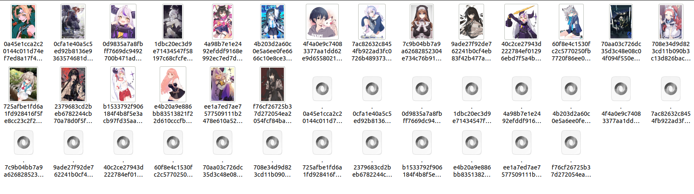
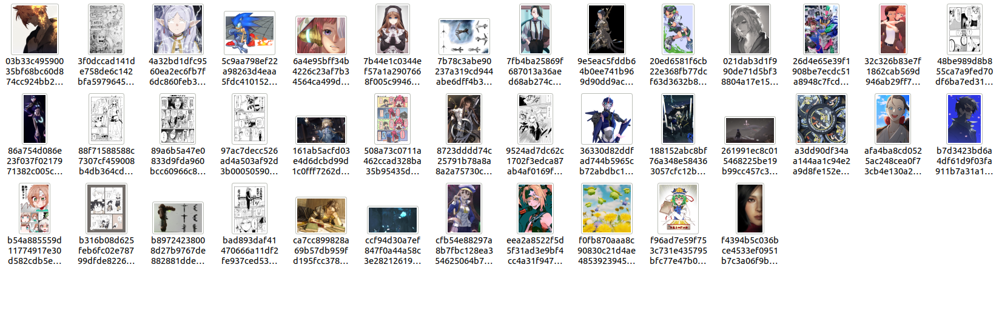
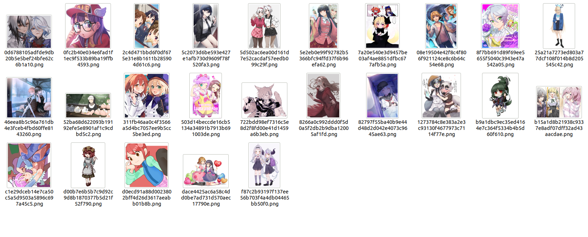
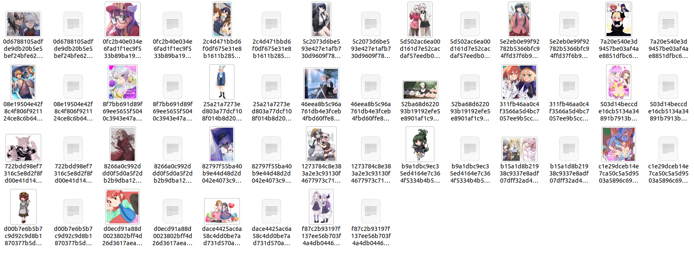
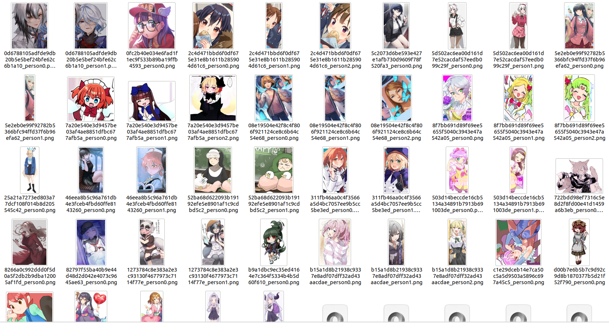
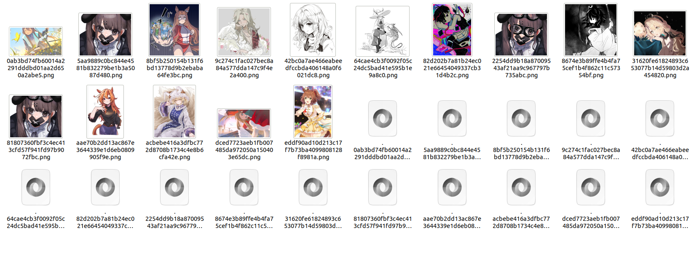
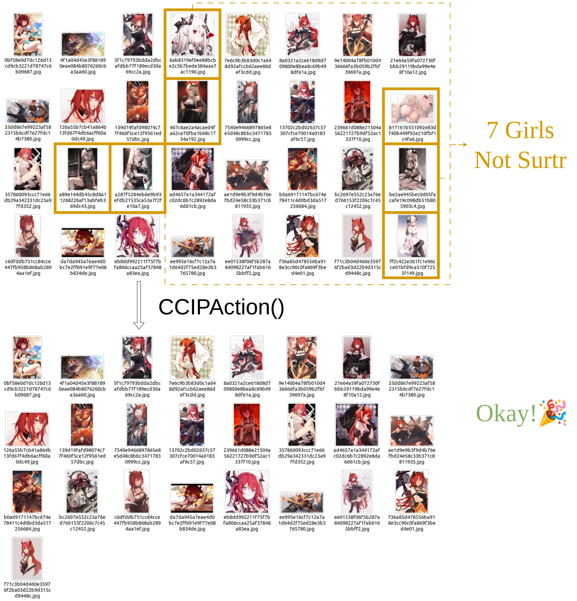
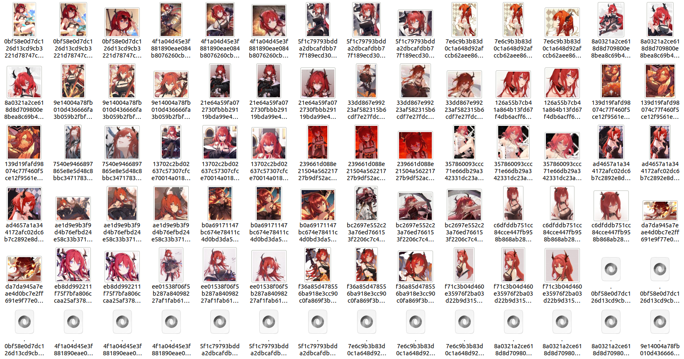

我想处理爬取到的或本地的图像
对于爬取的图像，我们常常还需要进一步的处理，以使其可以直接用于LoRA训练
该部分将对waifuc的此类功能进行介绍
Note
在处理爬取到的图像时，所有的数据源都支持通过定义变量来暂存数据源
该部分为编写方便，一概使用
LocalSource载入本地数据集进行演示而实际上，
Action可以用于所有的数据源waifuc提供了大量
Action，受限于篇幅，此处将不全部展示，更多功能将只在末尾进行列举，详细使用细节请参考更正式的程序文档
如何对数据进行处理？
在waifuc中，我们使用Action对获取到的数据进行处理，如之前的篇章中那样
我们通过调用Source的attach方法，来为图像数据添加Action，并产生新的数据源
下面是一个形式参考样例：
1from waifuc.source import LocalSource 2from waifuc.export import SaveExporter 3 4 5# 正确用法1 6if __name__ == '__main__': 7 source = LocalSource('/data/mydataset') 8 # 当attach方法添加Action处理后紧随export方法 9 source.attach( 10 # XXXAction(), #这里用来代表任意一个Action 11 ).export(SaveExporter('/data/dstdataset')) 12 13 14# 正确用法2 15if __name__ == '__main__': 16 source = LocalSource('/data/mydataset') 17 # 对调用attach方法添加Action处理后的数据源进行存储 18 source = source.attach( 19 # XXXAction(), #这里用来代表任意一个Action 20 ) 21 # 此时导出的数据源为Action处理后的数据源 22 source.export(SaveExporter('/data/dstdataset'))
需要再次提醒的是，每当attach方法被调用，都将会生成一个新的数据源，而并不会改变原本的数据源
因此，以下的使用方法编译时不会发生错误，但存在逻辑错误，故attach中的Action将成为无用功：
1from waifuc.export import SaveExporter 2from waifuc.source import LocalSource 3 4# 逻辑错误用法！！！ 5if __name__ == '__main__': 6 source = LocalSource('/data/mydataset') 7 # 当attach方法添加Action处理后未紧随export方法， 8 # 若不进行存储则attach中的Action无效！ 9 source.attach( 10 # XXXAction(), #这里用来代表任意一个Action 11 ) 12 13 # 这！里！导！出！的！source！未！经！处！理！ 14 source.export(SaveExporter('/data/dstdataset')) 15
常见的Action及使用示例
ModeConvertAction
鉴于各类图片往往拥有各种不同的色彩格式，例如灰度图、二值图、RGB图片、RGBA图片等
我们需要对图像的色彩格式进行转换，以便后续各个Action的进一步处理
(详见：https://pillow.readthedocs.io/en/stable/handbook/concepts.html#modes )
使用方法如下：
1from waifuc.action import ModeConvertAction 2from waifuc.export import SaveExporter 3from waifuc.source import LocalSource 4 5if __name__ == '__main__': 6 source = LocalSource('/data/mydataset') 7 source = source.attach( 8 ModeConvertAction(mode='RGB', force_background='white'), 9 ) 10 11 source.export(SaveExporter('/data/dstdataset'))
该代码中将图像统一转换为RGB格式，对于带有透明背景的图片将填充白色作为背景
考虑到较多后续Action对图像的要求，以及为避免保存文件时格式不兼容
该Action在大部分情况下建议作为首个Action添加
FirstNSelectAction
对于爬取到的图像，我们有时只希望保留前若干个，不仅如此，对于网络数据源而言，我们更需要限制爬取的数量以确保流程的有穷性
使用方法如下：
1from waifuc.action import FirstNSelectAction 2from waifuc.export import SaveExporter 3from waifuc.source import LocalSource 4 5if __name__ == '__main__': 6 source = LocalSource('/data/mydataset') 7 source = source.attach( 8 FirstNSelectAction(100) 9 ) 10 11 source.export(SaveExporter('/data/dstdataset'))
该代码将仅保留从/data/mydataset中加载的前100张图像，并将其保存至/data/dstdataset目录
值得一提的是，对于该Action有一种等价而更加简洁的写法，如下所示：
1from waifuc.export import SaveExporter 2from waifuc.source import LocalSource 3 4if __name__ == '__main__': 5 source = LocalSource('/data/mydataset') 6 source = source[:100] 7 8 source.export(SaveExporter('/data/dstdataset'))
没错，这正是之前的内容中所经常使用到的写法
NoMonochromeAction
处理训练数据时，常常会混入单色图
在大部分情况下，这些图像都不是我们想要的，因为它们往往会对模型的训练带来负面影响
因此我们需要筛除它们
(单色图定义详见：https://danbooru.donmai.us/wiki_pages/monochrome?z=2 )
对于以下存放于/data/raw的数据集：

使用方法如下：
1from waifuc.action import NoMonochromeAction 2from waifuc.export import SaveExporter 3from waifuc.source import LocalSource 4 5if __name__ == '__main__': 6 source = LocalSource('/data/raw') 7 source = source.attach( 8 NoMonochromeAction(), 9 ) 10 11 source.export(SaveExporter('/data/dstdataset'))
Note
视图像具体内容，该Action时也会将配色与单色图过于相近的图像筛除
非单色图的图像文件将被保存在/data/dstdataset目录，如下所示：

ClassFilterAction
类似地，处理训练数据的时候，常常会有漫画和3D图像混入
我们同样需要筛除它们
对于以下存放于/data/raw的数据集：

使用方法如下：
1from waifuc.action import ClassFilterAction 2from waifuc.export import SaveExporter 3from waifuc.source import LocalSource 4 5if __name__ == '__main__': 6 source = LocalSource('/data/raw') 7 # 只保留插画或番剧截图图像 8 # 支持的类型有'illustration','bangumi','comic','3D' 9 source = source.attach( 10 ClassFilterAction(['illustration', 'bangumi']), 11 ) 12 13 source.export(SaveExporter('/data/dstdataset'))
非漫画或3D的图像文件将被保存在/data/dstdataset目录，如下所示：

FilterSimilarAction
同样的，处理训练数据的时候，我们有时也需要处理一样或相似的图像
我们可以基于LPIPS模型筛除它们
(LPIPS模型详见：https://github.com/richzhang/PerceptualSimilarity )
对于以下存放于/data/raw的数据集：

使用方法如下：
1from waifuc.action import FilterSimilarAction 2from waifuc.export import SaveExporter 3from waifuc.source import LocalSource 4 5if __name__ == '__main__': 6 source = LocalSource('/data/raw') 7 source = source.attach( 8 FilterSimilarAction(), 9 ) 10 11 source.export(SaveExporter('/data/dstdataset'))
剔除相似图像后的其余图像文件将被保存在/data/dstdataset目录，如下所示：

TaggingAction
训练时一般需要对图像进行标注，具体格式为图像文件+同名txt文件
对于以下存放于/data/raw的数据集：

使用方法如下：
1from waifuc.action import TaggingAction 2from waifuc.export import TextualInversionExporter 3from waifuc.source import LocalSource 4 5if __name__ == '__main__': 6 source = LocalSource('/data/raw') 7 source = source.attach( 8 TaggingAction(), 9 ) 10 11 source.export(TextualInversionExporter('/data/dstdataset'))
Note
该
Action并不能直接导出图像文件+txt文件的格式，只会为图像生成tag信息并存储在元数据中，只有使用TextualInversionExporter导出才能生成所需的格式在爬取部分网站，如danbooru时，由于网站上的图像本身带有tag信息，因此元数据中将会包含来自网站的图片tag信息
此时直接使用该
Action将会跳过这些自带tag信息的图像，从而导致最终导出的数据集中所包含的tag信息均来自网站原始tag信息如果想要给每一张图片都重新生成tag信息，那么需要将
force参数设置为True以进行强制打标，这样原有的tag信息就将被替换为tagger生成的信息
标注后的图像文件与标注文件将被保存在/data/dstdataset目录，如下所示：

PersonSplitAction
处理训练数据的时候，我们有时需要处理多人图像
大多时候，我们希望将图片中的各个人物进行拆分，以便最大化利用
对于以下存放于/data/raw的数据集：

使用方法如下：
1from waifuc.action import PersonSplitAction 2from waifuc.export import SaveExporter 3from waifuc.source import LocalSource 4 5if __name__ == '__main__': 6 source = LocalSource('/data/raw') 7 source = source.attach( 8 PersonSplitAction(), 9 ) 10 11 source.export(SaveExporter('/data/dstdataset'))
拆分完毕的图像文件将被保存在/data/dstdataset目录，如下所示：

FaceCountAction
处理训练数据的时候，我们有时需要对图像中的人脸数量进行判定并进行筛选
对于以下存放于/data/raw的数据集：

使用方法如下：
1from waifuc.action import FaceCountAction 2from waifuc.export import SaveExporter 3from waifuc.source import LocalSource 4 5if __name__ == '__main__': 6 source = LocalSource('/data/raw') 7 source = source.attach( 8 FaceCountAction(1), 9 ) 10 11 source.export(SaveExporter('/data/dstdataset'))
包含且仅包含一张人脸的图像文件将被保存在/data/dstdataset目录，如下所示：

CCIPAction
处理训练数据的时候，我们时常会遇到混入无关的角色的情况
即便对于Danbooru这样有明确的人物tag的网站，也依然会存在一定比例的无关角色，类似PersonSplitAction的部分Action也会在分割时制造无关图像
该问题往往很难通过常见的筛选机制彻底避免，但这样的杂质又会对训练集质量带来明显的负面影响
故DeepGHS提供了CCIP模型来处理这个问题
使用方法如下：
1from waifuc.action import CCIPAction 2from waifuc.export import SaveExporter 3from waifuc.source import LocalSource 4 5if __name__ == '__main__': 6 source = LocalSource('/data/raw') 7 source = source.attach( 8 CCIPAction(), 9 ) 10 11 source.export(SaveExporter('/data/dstdataset'))
筛除效果如下所示：

不仅如此，当我们将PersonSplitAction和该Action一同使用时，可以同时将从包含单人图像和多人图像的数据源中精确处理出所需角色的单人图像，如下所示：
1from waifuc.action import CCIPAction, PersonSplitAction 2from waifuc.export import SaveExporter 3from waifuc.source import LocalSource 4 5if __name__ == '__main__': 6 source = LocalSource('/data/raw') 7 source = source.attach( 8 PersonSplitAction(), 9 CCIPAction(), 10 ) 11 12 source.export(SaveExporter('/data/dstdataset'))
整体处理效果如下所示：

Note
关于该Action值得注意：
在默认情况下，请确保数据源至少可以提供15张指定角色的图像，CCIP模型需要一定数量的图片进行交叉验证，以确定数据源中作为主体的角色
如果不能提供足量图片，则会导致图片全部堆积在该Action环节，无法进行后续Action
CCIP模型有效的前提是——数据集中包含且包含一个主体角色，即用户所希望获取的角色，并且该角色的在数据源中的占比不能过低，原则上不应低于60%
CCIP模型需要通过聚类算法确定数据源中的主体角色，以便对全部图像进行筛选。如果数据源不满足这一特点，那么将让
CCIPAction长时间无法确定主体角色，从而导致图片堆积。
AlignMinSizeAction
当数据源中包含尺寸过大的图像时，由于SD1/2的模型在训练时并不需要大尺寸
因此我们可以将大尺寸的图片进行压缩
使用方法如下：
1from waifuc.action import AlignMinSizeAction 2from waifuc.export import SaveExporter 3from waifuc.source import LocalSource 4 5if __name__ == '__main__': 6 source = LocalSource('/data/raw') 7 source = source.attach( 8 AlignMinSizeAction(800), 9 ) 10 11 source.export(SaveExporter('/data/dstdataset'))
以上代码的效果是，对于短边长度超过800像素的图像，保持原有长宽比进行缩放，使得短边长度为800像素
RandomFilenameAction
在部分情况下，为了使被处理的图像处于乱序状态，以避免模型训练时按序加载，我们需要通过随机重命名对图像进行打乱操作
使用方法如下：
1from waifuc.action import RandomFilenameAction 2from waifuc.export import SaveExporter 3from waifuc.source import LocalSource 4 5if __name__ == '__main__': 6 source = LocalSource('/data/raw') 7 source = source.attach( 8 RandomFilenameAction() 9 ) 10 11 source.export(SaveExporter('/data/dstdataset'))
ThreeStageSplitAction
在一些LoRA角色模型训练相关的实验中，已经初步证明——将同一个人像进行“全身像+上身像+头像”拆分后用于模型训练，可以使LoRA获得更好的泛化性，角色细节的还原度也会更好
对于以下存放于/data/raw的数据集：

使用方法如下：
1from waifuc.action import ThreeStageSplitAction, FilterSimilarAction 2from waifuc.export import SaveExporter 3from waifuc.source import LocalSource 4 5if __name__ == '__main__': 6 source = LocalSource('/data/raw') 7 source = source.attach( 8 ThreeStageSplitAction(), 9 FilterSimilarAction() 10 ) 11 12 source.export(SaveExporter('/data/dstdataset'))
其中FilterSimilarAction可以筛除掉拆分后出现的高度相似的子图像，建议添加
拆分完毕的图像文件将被保存在/data/dstdataset目录，如下所示：

其他Action
更多的Action可以在源代码中找到，这里不再展开
(具体详见：https://github.com/deepghs/waifuc/blob/main/waifuc/action/init.py)
另外，Action支持高度自定义，这意味着你可以自行定制你所需要的处理并将其加入到流程中
关于自定义的具体细节，将在后续的内容中进行详细介绍